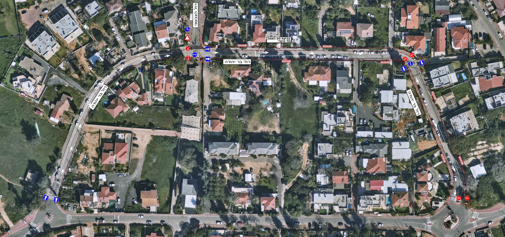
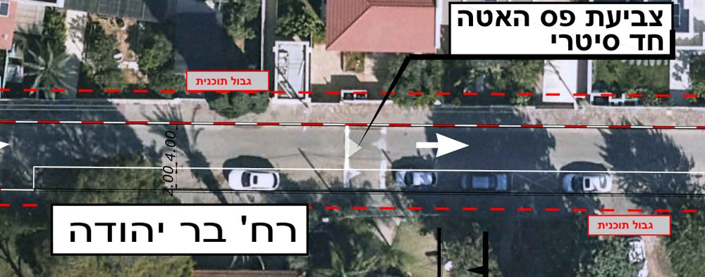
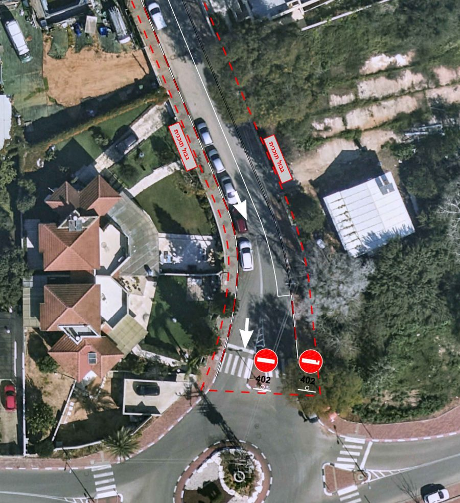
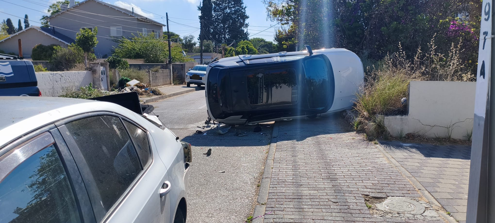
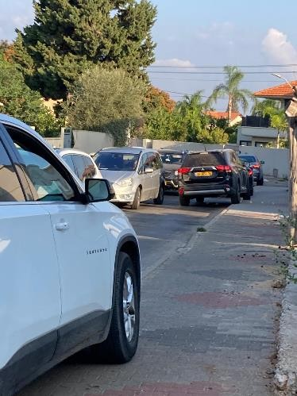

המועצה מוכנה להפוך את בר יהודה לחד‑סטרי. עכשיו זה תלוי בנו.
המועצה המקומית קדימה-צורן הכינה תכנית להפוך את המשך רחוב בר יהודה לחד-סטרי ולהסדיר בו את החניה. התכנית תתקדם רק אם רוב בתי האב ברחובות הסמוכים יחתמו שהם מסכימים. חתימה אחת מכל בית אב — וזה קורה.
איך הגענו לכאן
- יוני 2026תאונה קשה בעיקול הרחוב: רכב התהפך, באותה נקודה שעליה התרענו בפני המועצה במשך שנים.
- יוני 2026תושבי הרחוב שלחו למועצה מכתב דרישה ואספו חתימות.
- ספטמבר 2026פגישה של נציג התושבים עם צוות ועדת התנועה של המועצה.
- 4 באוקטובר 2026 — עכשיוהמועצה שלחה תכנית מסודרת, והודיעה שתקדם אותה אם תהיה הסכמה רחבה של תושבי הרחובות הקשורים.
מה המועצה מציעה — ארבעה שינויים
- חד-סטרי מרחוב הצבעוני ועד כיכר שבזי המקטע מרחוב הצבעוני ועד הכיכר ברחוב שבזי (כיכר שבזי–לוע הארי) יהפוך לחד-סטרי. זה המשך ישיר לקטע הראשון של בר יהודה, שהפך לחד-סטרי לפני כשנתיים. הנסיעה תהיה בכיוון אחד: מהצבעוני לכיוון הכיכר.
- חניה מסודרת בצד הדרומי — בתחילת הקטע בחלק הראשון של הקטע, אחרי רחוב הצבעוני, יסומנו מקומות חניה בצד הדרומי של הרחוב.
- חניה מסודרת בצד המזרחי — עד הכיכר בקטע שבין סמטת ההדסים לכיכר שבזי–לוע הארי יסומנו מקומות חניה בצד המזרחי של הרחוב.
- אין כניסה מהכיכר הכניסה לרחוב בר יהודה מכיוון כיכר שבזי–לוע הארי תיאסר, בכל שעות היממה.

איך קוראים את השרטוט?
לא בטוחים מה זה "הצד הדרומי" ומה זה "הצד המזרחי"? לא צריך מצפן. בשרטוט של המועצה פשוט מחפשים את המסגרת הלבנה:
- מסגרת לבנה — האזור שבתוך המסגרת יהיה אזור חניה מסומן.
- המדרכה בצד השני של הכביש — תיצבע באדום-לבן. שם אסור לחנות.
- חצים לבנים על הכביש — כיוון הנסיעה החדש, בכיוון אחד בלבד.
- תמרור אין כניסה (עיגול אדום עם פס לבן) — אין כניסה לבר יהודה מהכיכר.
הקו האדום המקווקו עם הכיתוב "גבול תוכנית" הוא רק גבול השרטוט. הוא לא סימון שיופיע על הכביש.
תקריב 1: תחילת הקטע, אחרי רחוב הצבעוני

- סימון 1: מסגרת לבנה בצד הדרומי — כאן חונים.
- סימון 2: שפת המדרכה ממול — אדום-לבן, אסור לחנות.
- סימון 3: החץ — כיוון הנסיעה, מהצבעוני לכיוון הכיכר.
תקריב 2: סוף הרחוב, ליד כיכר שבזי–לוע הארי

- סימון 1: מסגרת לבנה בצד המזרחי — כאן חונים.
- סימון 2: שפת המדרכה ממול — אדום-לבן, אסור לחנות.
- סימון 3: החץ — הנסיעה יורדת אל הכיכר.
- סימון 4: תמרורי אין כניסה — מהכיכר אי אפשר להיכנס לבר יהודה.
למה זה חשוב לכולנו
ברחוב הצר נשאר בפועל נתיב אחד לשני כיווני נסיעה. כל בוקר, בשעות היציאה לגנים ולבתי הספר, רכבים נתקעים זה מול זה, ממתינים, ועולים על המדרכה כדי לעבור — בדיוק במקום שבו הולכים ילדים.
ב-23 ביוני 2026 רכב התהפך בעיקול הרחוב. זו סכנת חיים אמיתית, והיא נמצאת אצלנו ברחוב כל יום. רחוב חד-סטרי עם חניה מסודרת הוא צעד ממשי שמוריד את הסכנה — והוא כבר מוכן על השולחן של המועצה.
למה צריך את החתימה שלכם? המועצה הבהירה שהתכנית תתקדם רק כשיוצגו בפניה מסמכים שמראים שהתושבים מסכימים. דרושה חתימה של רוב בתי האב ברחובות הקשורים. ברגע שנגיע לרוב, נציג התושבים יעביר את רשימת החתימות למועצה, והתכנית תעבור לדיון ולאישור בוועדת התנועה.


חשוב: חתימה אחת לכל בית אב
מה זה בית אב? משק בית אחד — כל מי שגר יחד באותו בית, עם אותו מספר בית. המועצה סופרת בתי אב, לא אנשים. לכן:
- כן: כל בית שיש לו מספר משלו הוא בית אב, וחותם פעם אחת.
- לא: בני זוג או בני משפחה שגרים באותו בית — רק אחד מכם חותם, בשם כל בית האב.
- לא: בית ויחידת השכרה שיש להם אותו מספר — חתימה אחת בלבד לשניהם.
- כן: יחידה עם מספר נפרד (למשל 13 ו-13א) — כל מספר חותם בנפרד.
- כן: גרים ברחוב סמוך? השינוי נוגע גם לכם. חתמו ובחרו את הרחוב שלכם.
מה צריך למלא? שלושה פרטים בלבד:
- שם החותם
- שם הרחוב
- מספר הבית
לא מצאתם את הרחוב או את המספר שלכם ברשימה? בחרו "אחר" והקלידו אותו בעצמכם — או פשוט לחצו על הבית שלכם במפה.
חתמתם על העצומה הקודמת ביוני?
המועצה מבקשת עכשיו הסכמה לתכנית הזו בדיוק — נשמח שתחתמו שוב, פעם אחת לכל בית אב.
אני בעד — לחתימהחתימה בשם בית האב
בחרו את הכתובת מהרשימה — או לחצו על הבית שלכם במפה, והפרטים יתמלאו לבד.
טופס החתימה ייפתח בקרוב. אפשר כבר לעיין בתכנית ובמפה.
תודה! בית האב שלכם נספר.
עכשיו הכי חשוב: שלחו לשכנים — כל בית אב שחותם מקרב אותנו לרוב.
מפת בתי האב שחתמו
לחצו על הבית שלכם כדי לחתום. בית שחותם נצבע בירוק.
- חתם
- עוד לא חתם
- בית בלי מספר במאגר
- יהפוך לחד-סטרי
- כבר חד-סטרי
המיקומים לפי מאגר הכתובות הממשלתי וקווי המבנים של OpenStreetMap. לצפייה באזור ב-GovMap
חתימות לפי רחוב (טבלה)
| רחוב | בתי אב שחתמו |
|---|